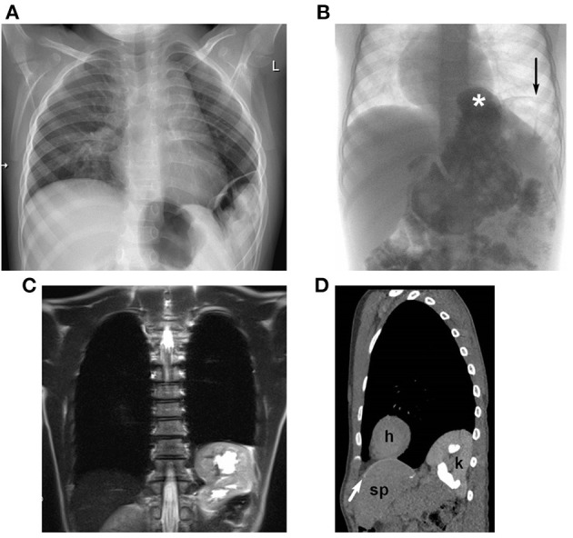
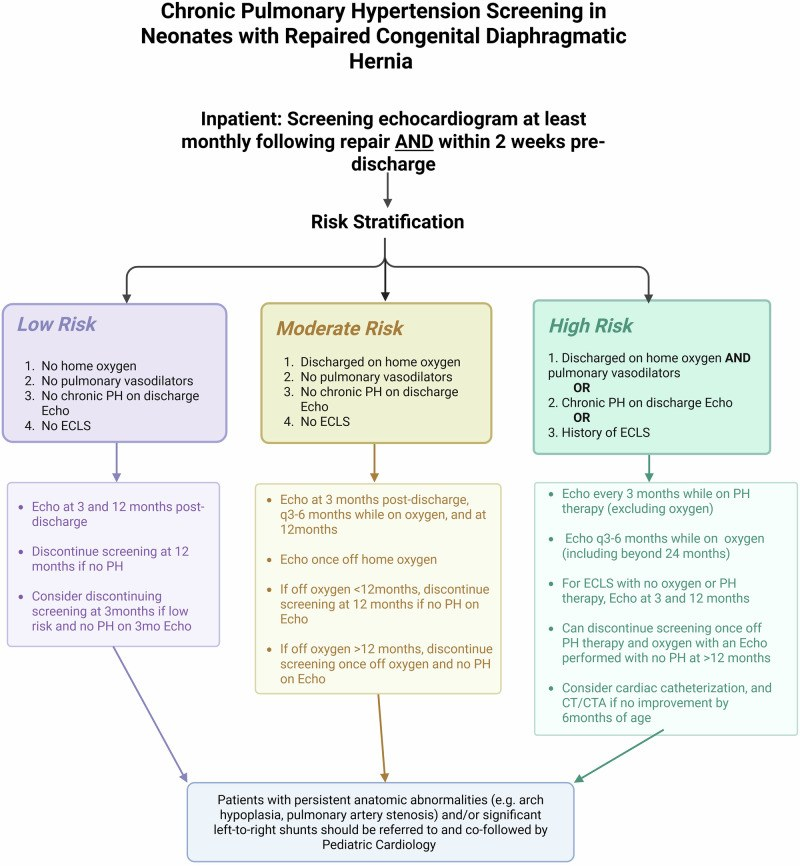

608 — Theo dõi sau mổ thoát vị hoành bẩm sinh (CDH): tái phát, tăng áp phổi, trào ngược & dinh dưỡng / Post-CDH repair follow-up
Tags: pattern:tai-phat-cdh pattern:tang-ap-phoi pattern:trao-nguoc-day-thuc-quan vung:co-hoanh-nhi vung:phoi-nhi protocol:X-quang-nguc-nhi protocol:sieu-am-tim protocol:UGI score:CDHSG-defect-size
Mức chắc chắn (certainty): tổng hợp y văn (literature synthesis) — tự biên từ 4 nghiên cứu đoàn hệ/sơ đồ mở: theo dõi X-quang phát hiện tái phát (Zahn KB và cs., Front Pediatr 2021, PMC8719630); sàng lọc tăng áp phổi mạn (Byrd CE và cs., J Perinatol 2026, PMC13290494); tăng trưởng 1.247 trẻ (Eur J Pediatr 2025, PMC12594663); tái nhập viện & tử vong muộn toàn quốc (JAMA Netw Open 2026, PMC13316603). Không gắn một bệnh án đơn lẻ.
1. Tổng quan bệnh học – cơ chế hình ảnh: "mổ xong" không phải "hết bệnh"
- Dịch tễ: CDH (congenital diaphragmatic hernia) gặp 1/3.000–5.000 trẻ sinh sống; 85–90% là lỗ Bochdalek bên trái. Trong đoàn hệ 508 sơ sinh mổ mở tại Mannheim, sống tới khi xuất viện 81%; trong số sống, 90% tham gia chương trình theo dõi dọc.
- Bộ ba bệnh sinh: (1) giảm sản nhu mô phổi, (2) bất thường mạch máu phổi (ít mao mạch, tái cấu trúc), (3) rối loạn chức năng tim (thất trái giảm sản tương đối). Vì vậy sau khi đóng lỗ hoành, phổi vẫn không bình thường: FRC, độ giãn và sức cản đường thở còn bất thường ở 6 tháng tuổi, và vẫn bất thường ở 23 tuổi — nặng nhất ở nhóm ECMO.
- TẠI SAO phổi vẫn "lớn lên" nhưng không "lành": sau mổ, thể tích phổi tăng khoảng 8 mL/tuần (đối chiếu MRI thai), nhưng tăng thể tích chủ yếu do giãn các đơn vị còn lại, không tạo thêm phế nang–mạch máu mới. Trên X-quang, phổi bên mổ có thể sáng hơn, mạch máu thưa vĩnh viễn — đây là di chứng, không phải tái phát.
- TẠI SAO tái phát xảy ra: cơ hoành được đóng dưới lực căng (đặc biệt khi phải dùng mảnh ghép), trẻ lớn nhanh làm lỗ hoành rộng tương đối; tổ chức xơ co kéo miệng vá; tăng áp lực ổ bụng (táo bón, ho, bú mạnh) đẩy tạng lên. Kết quả: tạng thoát vị lại hoặc hình thành thoát vị hoành–thực quản thứ phát (hiatal hernia).
- TẠI SAO X-quang là công cụ sàng lọc đầu tay: khí trong ruột có đậm độ −1000 HU, mô mềm 20–60 HU, xương > 300 HU; quai ruột trong ngực tạo vùng sáng có vách hoặc mức khí–dịch trên nền phổi, còn gan lạc chỗ tạo khối mờ đặc ở đáy phổi. Chênh lệch đậm độ này đủ để phát hiện phần lớn tái phát trên phim nằm ngửa tại giường — không cần CT thường quy.
- Ngưỡng định lượng nằm lòng (đoàn hệ Mannheim, 326 trẻ theo dõi ≥ 2 năm):
- 38 biến chứng hoành ở 31 trẻ = 9,5% người bệnh; trong đó 63% tái phát thật, 21% thoát vị hoành–thực quản thứ phát, 16% cả hai.
- 51,4% chẩn đoán trong năm đầu, 31,4% trong năm thứ hai, 8,6% lúc 2–4 tuổi, 8,6% sau 4 tuổi.
- 92,1% phát hiện bằng hình ảnh khi còn không triệu chứng; 43,2% hoàn toàn không triệu chứng; 2,6% đến với tắc ruột cấp do nghẹt.
- Yếu tố nguy cơ: CDH trái RR 8,5 (KTC 1,2–61), vá thành bụng RR 3,2 (1,8–5,8), gan lên ngực RR 2,5 (1,2–5,3); lỗ C–D: 17/100 so với A–B: 1/40 (p = 0,02). Tái phát lần hai gặp ở 19,3% số trẻ đã tái phát.
- TẠI SAO tăng áp phổi (PH) mạn là "bệnh thứ hai": mạch phổi giảm sản → PVR cao; thêm tổn thương do thở máy, nhiễm trùng, hít sặc → tái cấu trúc mạch. Ba kiểu huyết động (theo định luật Ohm PAP = PBF × PVR + LAp): do sức cản (hay nhất), do lưu lượng (PDA/VSD hoặc thuốc giãn mạch quá liều), sau mao mạch (rối loạn chức năng thất trái, hẹp tĩnh mạch phổi). Điều trị khác và đôi khi ngược nhau, nên phải phân kiểu trước khi dùng thuốc.
- Ngưỡng PH mạn (đề xuất, chưa có đồng thuận): PAP tăng trên siêu âm tim ≥ 3 tháng sau mổ hoặc tại lúc xuất viện, kèm xét nhu cầu oxy/thuốc. Tỷ lệ: 4,5–38% ở trẻ 2–5 tuổi (meta-analysis, chọn lọc làm sai lệch khoảng cao); 11,6% cần thuốc PH lúc xuất viện (CHNC); 8,7% trong đoàn hệ Pháp; 1/3 trẻ sau ECLS; 1/10 trẻ 8 tuổi có PH khi gắng sức dù nghỉ bình thường.
- Trào ngược & dinh dưỡng — vì sao hay gặp: cơ hoành–trụ hoành bị mổ, góc His đổi, áp lực ổ bụng tăng, phổi giảm sản làm phối hợp bú–thở kém. Trong 916 trẻ theo dõi: 18,0% có triệu chứng trào ngược, nhưng chỉ 13,4% có bằng chứng khách quan (nội soi/24 giờ pH–trở kháng/đối quang); 9,6% trào ngược nặng trên đối quang; 6,9% phải mổ chống trào ngược. Triệu chứng không dự báo được mức độ — đây là lý do không được chỉ dựa vào hỏi bệnh.
- Tăng trưởng (1.247 trẻ, theo dõi tới 18 tuổi): ở 6 tháng, cân nặng z-score −1,47 (đủ tháng) và −2,45 (non tháng); 33,3% và 59,4% nhẹ cân vừa–nặng. Đến 2 tuổi còn 13,8% và 26,8%; đến 10 tuổi vẫn −0,75 và −0,86 z-score. Kết luận: bắt kịp một phần, không hoàn toàn — cần theo dõi z-score, không nhìn cân nặng tuyệt đối.
- Tái nhập viện & tử vong muộn (1.028 trẻ sống xuất viện, Pháp): 72,5% tái nhập viện trong 3 năm; 76,6% các lần tái nhập xảy ra trong năm đầu; trung vị lần đầu 176 ngày. Nguyên nhân: hô hấp/nhiễm 27,6% (viêm tiểu phế quản 14,7%), dinh dưỡng–tiêu hóa 14,9% (sợ ăn 7,7%, chậm tăng cân 3,6%, trào ngược 5,0%), biến chứng ngoại khoa 16,9% (tắc ruột 8,1%, tái phát 4,5%). Tử vong muộn 1,4% (14/1.028), 11/14 trong 2 năm đầu, một nửa liên quan CDH (PH kháng trị, biến chứng mở khí quản); sinh non HR 3,94, còn nuôi ăn qua ống lúc xuất viện HR 5,09.
2. Mẫu hình + chẩn đoán phân biệt theo vị trí & triệu chứng (Gamut)
- Ba câu hỏi bắt buộc khi đọc phim theo dõi: (1) đường cơ hoành có liên tục bên mổ? (2) có quai ruột/mô đặc lạc chỗ trong ngực? (3) trung thất–tim có lệch so với phim trước? Thiếu cả ba không loại trừ tái phát nhỏ.
- Gamut theo mẫu hình X-quang:
- Vùng sáng có vách/mức khí–dịch ở đáy phổi bên mổ: tái phát CDH (ruột non), thoát vị hoành–thực quản thứ phát (dạ dày), hang phổi/áp-xe (hiếm), nang phổi bẩm sinh còn lại.
- Khối mờ đặc đáy phổi, bờ trên cong: gan lạc chỗ (tái phát thể "liver-up"), xẹp thùy dưới, tràn dịch màng phổi khu trú — phân biệt bằng siêu âm tại giường (gan có mạch máu trong nhu mô) hoặc MRI/CT.
- Trung thất lệch sang bên mổ: tái phát (đẩy ngược), xẹp phổi bên mổ (kéo), tràn khí màng phổi bên đối diện (đẩy), xoay mảnh ghép.
- Cơ hoành cao, bờ cong đều, không có quai ruột: liệt/eventration cơ hoành sau mổ — khác tái phát; chẩn đoán bằng so phim hít vào–thở ra hoặc siêu âm/fluoroscopy thấy chuyển động nghịch thường.
- Phổi bên mổ sáng hơn, mạch thưa: giảm sản phổi tồn dư — bình thường ở trẻ CDH, không phải tràn khí.
- Gamut theo triệu chứng ("vì sao trẻ không tiến triển"):
- Thở nhanh, khó cai oxy, tím khi bú: PH mạn, tracheobronchomalacia (xem 602), hẹp phế quản, hít sặc do trào ngược, tái phát.
- Nôn tái diễn, sợ ăn, chậm tăng cân: trào ngược, hẹp môn vị, tắc ruột do dính, tái phát, rối loạn nuốt sau thời gian dài thở máy.
- Đau bụng cấp + nôn + khó thở: nghẹt tạng thoát vị — cấp cứu ngoại khoa, không chờ nội soi.
- Ho ra máu/thiếu máu: loét do ống dạ dày, viêm thực quản, hiếm khi tổn thương mạch.
- Mnemonic "DIA-PHRAGM": Defect size lớn (C–D), Intrathoracic liver/stomach, Abdominal wall patch, Prematurity, Hiatal hernia, Recurrence, Aspiration/GERD, Growth failure, Mortality muộn.
3. Bảng so sánh phân biệt (ma trận đối chiếu)
| Thực thể (entity) | Hình ảnh điển hình | Chốt vào (rule-in) | Chốt loại (rule-out) | Gợi ý xác nhận |
|---|---|---|---|---|
| Tái phát thật tại lỗ vá | X-quang: quai ruột/mức khí–dịch sát vị trí vá, mất đường cơ hoành; CT: khiếm khuyết thành bụng–ngực | Khiếm khuyết cơ hoành + tạng qua lỗ + so phim cũ thấy mới | Cơ hoành liên tục trên mọi lát + không tạng lạc chỗ → loại | X-quang 2 bình diện; CT khi mờ; mổ xác nhận |
| Thoát vị hoành–thực quản thứ phát | Dạ dày nằm trên hoành, "dấu bánh mì" quanh thực quản; đối quang: dạ dày cạnh thực quản | Dạ dày trên hoành + tiền sử CDH trái có dạ dày lên ngực | Dạ dày dưới hoành, không trào ngược đối quang → loại | Đối quang đường tiêu hóa trên; CT |
| Liệt/eventration cơ hoành | Cơ hoành cao, cong mượt, không quai ruột; nghịch thường thì thở | Chuyển động nghịch thường trên fluoroscopy/siêu âm | Có khiếm khuyết + tạng qua lỗ → tái phát, không phải liệt | Siêu âm/fluoroscopy; so phim hít–thở |
| Giảm sản phổi tồn dư | Phổi bên mổ sáng, mạch thưa, thể tích nhỏ, không mức dịch | Ổn định qua nhiều năm, không đẩy trung thất | Mới xuất hiện + đẩy trung thất → tái phát/tràn khí | So phim cũ; CT khi nghi ngờ |
| Bệnh phổi mạn/BPD–PH | Phổi ứ khí, đám mờ; tim to; cung ĐMP giãn | Siêu âm tim: TR > 2,8 m/s hoặc vách liên thất dẹt thì tâm thu | Siêu âm bình thường không loại trừ PH khi gắng sức | Siêu âm tim định kỳ; thông tim khi nặng |
| Trào ngược bệnh lý | Đối quang: trào ngược lên thực quản trên; không có tiêu chuẩn vàng trên X-quang | AET ≥ 6% hoặc ≥ 80 lần trào/24 giờ trên pH–trở kháng | Đối quang bình thường không loại trừ — triệu chứng cũng không dự báo | pH–trở kháng 24 giờ + nội soi |
| Tắc ruột do dính | Mức khí–dịch nhiều tầng, quai giãn, không có tạng trong ngực | Quai giãn + mức dịch + không tạng ngực | Có tạng ngực → tái phát/nghẹt | X-quang bụng; CT có cản quang |

Tái phát CDH không chỉ thấy trên X-quang: (A) X-quang bé trai 2 tuổi — tái phát bên; (B) đối quang bé trai 4 tuổi — thoát vị hoành–thực quản (*) và tái phát bên (→); (C) MRI và (D) CT liều thấp bé gái 10 tuổi — thận trái lên ngực gây ứ nước thận vừa. Nguồn: Zahn KB và cs., Front Pediatr 2021, PMC8719630 Fig. 3, CC BY 4.0.4. Protocol theo dõi + sàng lọc tăng áp phổi
- Nguyên tắc: CDH là bệnh đa hệ, theo dõi suốt đời; mỗi lần khám phải làm cân đo + z-score, X-quang ngực, siêu âm tim theo phân tầng, thính lực, phát triển thần kinh, và hỏi trào ngược/sợ ăn/đau bụng.
- Lịch theo dõi tham chiếu (Mannheim, sau mổ mở):
| Tuổi | X-quang ngực | Siêu âm tim | Đối quang/pH–trở kháng | Thính lực | Chức năng hô hấp | Thần kinh |
|---|---|---|---|---|---|---|
| Sơ sinh – 1 tuổi (mỗi 3 tháng) | Mỗi lần khám | Theo phân tầng PH | Khi có triệu chứng | Lúc sinh, 1 tuổi | – | Sàng lọc |
| 1–2 tuổi (mỗi 6 tháng) | Mỗi lần khám | Theo phân tầng | Khi có triệu chứng | – | – | Đánh giá |
| 2–5 tuổi (mỗi năm) | Mỗi năm | Khi có chỉ định | Khi có triệu chứng | – | Từ 5 tuổi | Đánh giá |
| 6–21 tuổi (mỗi 2–3 năm) | Mỗi lần khám | Khi có chỉ định | Khi có triệu chứng | – | Mỗi lần khám | Khi cần |
- Sàng lọc tăng áp phổi mạn theo nguy cơ (Byrd và cs., 2026):
- Nguy cơ thấp (không oxy tại nhà, không thuốc PH, siêu âm lúc xuất viện bình thường, không ECLS): siêu âm lúc 3 và 12 tháng; ngừng sàng lọc ở 12 tháng nếu không PH.
- Nguy cơ trung bình (oxy tại nhà, không thuốc PH, không ECLS): siêu âm 3 tháng, rồi 3–6 tháng khi còn oxy, và 12 tháng; ngừng khi cai oxy và không PH.
- Nguy cơ cao (oxy và thuốc PH, hoặc PH lúc xuất viện, hoặc có ECLS): siêu âm mỗi 3 tháng khi còn thuốc, 3–6 tháng khi còn oxy (kể cả sau 24 tháng); thông tim và CT/CTA nếu không cải thiện sau 6 tháng tuổi.
- Siêu âm tim đọc gì: hướng shunt qua PDA, vận tốc hở ba lá (TR) để ước tính PAP tâm thu, vị trí vách liên thất và chỉ số lệch tâm thì tâm thu (định lượng, đáng tin hơn mô tả "vách dẹt"). TR không đo được ở nhiều trẻ → phải phối hợp nhiều dấu hiệu, không kết luận từ một phép đo.
- Khi nào chụp CT: X-quang không kết luận (mờ đáy phổi, nghi gan lạc chỗ, nghi thoát vị khu trú), hoặc trước mổ tái phát để đánh giá kích thước lỗ, mảnh ghép, tạng thoát vị và mạch máu. Dùng liều thấp, lát ≤ 1 mm, ALARA; MRI thay thế khi cần đánh giá tạng đặc (thận, gan) mà không muốn tia X.
- Cấp cứu nghi nghẹt tạng: sonde dạ dày giải áp + CT bụng–ngực có cản quang tĩnh mạch (không dùng baryt khi nghi tắc), hội chẩn ngoại nhi ngay; không chờ đối quang đường tiêu hóa.
flowchart TD
A[Trẻ sống sau mổ CDH] --> B[Phân tầng nguy cơ lúc xuất viện]
B -->|Thấp| C[Siêu âm tim 3 và 12 tháng]
B -->|Trung bình| D[Siêu âm 3 tháng, 3-6 tháng khi còn oxy, 12 tháng]
B -->|Cao| E[Siêu âm mỗi 3 tháng khi còn thuốc PH]
E --> F{Không cải thiện sau 6 tháng tuổi?}
F -->|Có| G[Thông tim + CT/CTA]
F -->|Không| H[Tiếp tục theo dõi 3-6 tháng]
C --> I[X-quang ngực mỗi lần khám]
D --> I
H --> I
I --> J{Nghi tái phát?}
J -->|Không| K[Theo dõi định kỳ + tăng trưởng + thính lực]
J -->|Có| L[CT liều thấp hoặc MRI]
L --> M{Tạng qua lỗ?}
M -->|Có| N[Mổ tái phát có kế hoạch]
M -->|Không| O[Tìm nguyên nhân khác: PH, GERD, TBM]
5. Biến thể bình thường và cạm bẫy
- Tái phát không triệu chứng là quy luật, không phải ngoại lệ: 43,2% trẻ tái phát hoàn toàn không có triệu chứng; 92,1% được phát hiện nhờ hình ảnh. Vì vậy không được "cho về" chỉ vì trẻ khỏe.
- Mảnh ghép PTFE thường không thấy rõ trên X-quang: "không thấy mảnh ghép" không đồng nghĩa "chưa mổ" hay "miệng vá nguyên vẹn". Đừng dùng sự hiện diện của mảnh ghép làm tiêu chuẩn.
- Bóng hơi dạ dày nằm dưới hoành không loại trừ tái phát: gan, thận, ruột non có thể lên ngực trong khi dạ dày vẫn đúng chỗ — đây là lý do phải nhìn toàn bộ đáy phổi và so phim cũ.
- "Viêm phổi tái diễn cùng một chỗ" có thể là quai ruột thoát vị với mức khí–dịch (giả hang/giả nang). Trước khi cho kháng sinh đợt thứ ba, hãy chụp lại và so phim.
- Phim nằm ngửa, thì thở ra ở nhũ nhi làm cơ hoành "cao" giả tạo và phổi "mờ" giả tạo; luôn so với phim trước và, nếu nghi ngờ, chụp nghiêng hoặc nằm sấp.
- Tràn khí màng phổi bên đối diện sau mổ CDH có thể bị bỏ sót vì phổi bên mổ vốn đã "sáng"; kiểm tra bờ phổi tạng và trung thất thay vì độ đen tuyệt đối.
- Không chẩn đoán PH từ một lần siêu âm khi trẻ đang khóc: trẻ khóc làm áp lực lồng ngực tăng, TR tăng giả; cần đo lặp lại khi trẻ nằm yên, và đánh giá khi gắng sức (1/10 trẻ 8 tuổi chỉ có PH khi gắng sức).
- Triệu chứng trào ngược không tương quan với mức độ: 18,0% có triệu chứng nhưng chỉ 13,4% có bằng chứng khách quan; đối quang bình thường không loại trừ trào ngược bệnh lý.
- Tăng trưởng phải đọc bằng z-score: một trẻ 10 tuổi "nặng 26 kg" có thể vẫn thấp hơn −2 z-score; dùng cân nặng tuyệt đối sẽ bỏ sót suy dinh dưỡng.
- Satisfaction of search: thấy tái phát rồi dừng lại, bỏ sót PH, trào ngược, hẹp phế quản hoặc tắc ruột do dính đi kèm.
6. Tự lượng giá — Blind Quiz
Ca 1 — Bé trai 2 tuổi, từng mổ CDH trái lúc sơ sinh, nay khám định kỳ, không triệu chứng. Đọc phim trước khi mở đáp án.
- Gợi ý lâm sàng: hoàn toàn khỏe, chỉ khám theo lịch.
- Câu hỏi: (1) Dấu hiệu chính ở đáy phổi trái? (2) Nghĩ tái phát hay di chứng phổi? (3) Bước tiếp theo nếu phim không rõ?
Bấm để hiện đáp án (findings + chẩn đoán)
- Dấu hiệu: mất đường cong cơ hoành trái kèm vùng sáng có vách ở đáy phổi trái (panel A) — tương ứng quai ruột thoát vị lại; trung thất không lệch đáng kể.
- Chẩn đoán: tái phát CDH bên trái dù không triệu chứng — phù hợp với dữ liệu 43,2% tái phát không triệu chứng và 92,1% phát hiện bằng hình ảnh.
- Bước tiếp theo: nếu X-quang không rõ, CT liều thấp hoặc MRI (panel C–D) để xác định tạng thoát vị, kích thước lỗ và liên quan mảnh ghép; sau đó mổ tái phát có kế hoạch trước khi nghẹt.
- Phân biệt: giảm sản phổi tồn dư (ổn định, không có quai ruột), liệt cơ hoành (bờ cong mượt, không tạng), thoát vị hoành–thực quản thứ phát (dạ dày trên hoành).
- Nguồn ảnh: Zahn KB và cs., Front Pediatr 2021, PMC8719630 Fig. 3, CC BY 4.0.
Ca 2 — Bé gái 8 tháng, mổ CDH trái có vá mảnh ghép, xuất viện với oxy tại nhà. Nay thở nhanh khi bú, không sốt, X-quang không thấy tái phát. Hỏi gì và làm gì?
- Câu hỏi: (1) Ba nguyên nhân hàng đầu? (2) Siêu âm tim cần đo gì? (3) Khi nào chụp CT/thông tim?
Bấm để hiện đáp án (findings + chẩn đoán)
- Ba nguyên nhân: (1) PH mạn (nhóm nguy cơ trung bình–cao vì còn oxy tại nhà và có mảnh ghép), (2) trào ngược/hít sặc (18,0% có triệu chứng, nhưng phải khách quan hóa), (3) tracheobronchomalacia hoặc hẹp phế quản — đặc biệt nếu có tiếng thở rít thì thở ra và khó cai oxy.
- Siêu âm tim: hướng shunt PDA, TR để ước tính PAP tâm thu, vị trí vách liên thất và chỉ số lệch tâm thì tâm thu; đánh giá chức năng thất trái (kiểu sau mao mạch) và lưu lượng phổi (kiểu do lưu lượng).
- Chụp CT/thông tim: thông tim khi không cải thiện sau 6 tháng tuổi, khi cần phân biệt kiểu huyết động trước khi dùng thuốc, hoặc khi nghi hẹp tĩnh mạch phổi; CT khi nghi tái phát mà X-quang không rõ.
- Điểm cần nhớ: không dùng thuốc giãn mạch phổi một cách mù — kiểu do lưu lượng và sau mao mạch có thể nặng lên khi giãn mạch.
- Nguồn: Byrd CE và cs., J Perinatol 2026, PMC13290494 (sơ đồ phân tầng); Zahn KB và cs., Front Pediatr 2021, PMC8719630 (tái phát); số liệu trào ngược: Pediatr Surg Int 2026, PMC13186794.

Sơ đồ sàng lọc tăng áp phổi mạn: nguy cơ thấp — siêu âm 3 và 12 tháng rồi dừng; trung bình — 3 tháng, 3–6 tháng khi còn oxy, 12 tháng; cao — mỗi 3 tháng khi còn thuốc, 3–6 tháng khi còn oxy, thông tim/CT nếu không cải thiện sau 6 tháng tuổi. Nguồn: Byrd CE và cs., J Perinatol 2026, PMC13290494 Fig. 2, CC BY 4.0.Bài liên quan chéo
- 600 – Tổng quan Nhi khoa
- 610 – Suy hô hấp sơ sinh: RDS, TTN, MAS & CDH (chẩn đoán & cấp cứu ban đầu)
- 606 – BPD: bệnh phổi mạn tính ở trẻ sinh non (PH và bệnh phổi mạn)
- 602 – Tracheobronchomalacia ở trẻ BPD (nguyên nhân khó cai máy)
- 611 – PIE & tràn khí áp lực ở nhũ nhi
- 083 – Nuôi ăn qua sonde & biến chứng mạn (khi trẻ còn phụ thuộc ống ăn)
- 082 – Bại não & an toàn nuốt (đánh giá hít sặc)
Không dùng để chẩn đoán độc lập khi chưa có người hướng dẫn.